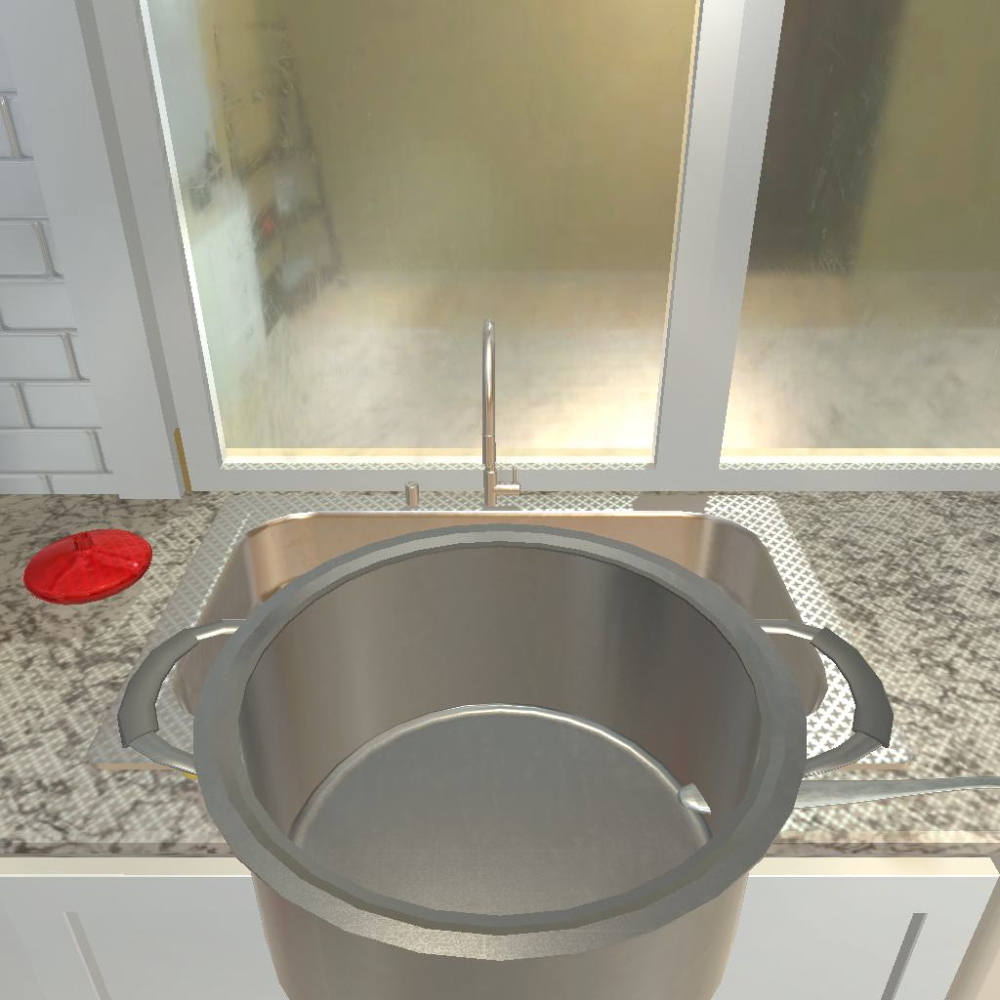

---------------------------------------------------------task: 16---------------------------------------------------------
--------------------------------------------------------------------------------------------------------------------------------------------------------------------
--------------------------------------------------------------------------------------------------------------------------------------------------------------------
Step:--------------------------------------------------------------------------15-------------------------------------------------------------------------------
----------------------------------------
VLM Prompt:
Image1:
Image2:
**Instruction**
1. Analyze the provided images to identify all visible household objects and compare the difference between images (e.h. whether the object is opened or not and taken on hand or not), focusing on those relevant to the task description "put a cool pan in sinkbasin."
2. Use the analysis of images and the task hint "The agent must find an object of the desired type, pick it up, go to a fridge, cool the object with the fridge, then find the correct location to place it, and put it down there. The agent does not need to use the fridge button or open the fridge to cool the object, and the agent just needs to do action that is "cool the object with the fridge"." to answer the question: what is the most reasonable action in the choices for the task description "put a cool pan in sinkbasin"?
3. Decide and write the answer using the template: The answer is: (i): , where i is the real number. If there is no desired object in images, search every place based on **Initial Observation** to find the object. And if no one is exactly correct, choose a similar answer.
**Initial Observation**
You are in the middle of a room. Looking quickly around you, you can see cabinet (1-9), countertop (1-3), drawer (1-9), stoveburner (1-4), microwave (1), sink (1), fridge (1), toaster (1), coffeemachine (1), sinkbasin (1), shelf (1-3), garbagecan (1)
**Answer Choices**
(1): go to cabinet 1
(2): go to countertop 1
(3): go to cabinet 2
(4): go to countertop 2
(5): go to drawer 1
(6): go to drawer 2
(7): go to drawer 3
(8): go to drawer 4
(9): go to stoveburner 1
(10): go to drawer 5
(11): go to stoveburner 2
(12): go to stoveburner 3
(13): go to stoveburner 4
(14): go to cabinet 3
(15): go to cabinet 4
(16): go to microwave 1
(17): go to cabinet 5
(18): go to cabinet 6
(19): go to cabinet 7
(20): go to toaster 1
(21): go to coffeemachine 1
(22): go to cabinet 8
(23): go to drawer 6
(24): go to drawer 7
(25): go to drawer 8
(26): go to sinkbasin 1
(27): go to shelf 1
(28): go to shelf 2
(29): go to countertop 3
(30): go to shelf 3
(31): go to drawer 9
(32): go to cabinet 9
(33): go to garbagecan 1
(34): clean pot 1 with sink 1
(35): clean pot 1 with sinkbasin 1
(36): examine pot 1
(37): examine sink 1
**Answer**
Let's think step by step by following the instructions.
----------------------------------------
----------------------------------------
Original Response:
Image Analysis:
Both images show the same scene with a pot in the sink and a red lid on the countertop next to the sink. There are no noticeable differences between the two images regarding the position or state of objects.
Task Hint Analysis:
The task requires finding a pan (pot), cooling it with the fridge, then putting it in the sinkbasin. The agent does not need to interact with the fridge buttons or doors, just perform the action to cool the object with the fridge.
Answer Selection:
Based on the initial observation, we know there is a sinkbasin (1) in the room. In the images provided, we see a pot already in the sink, which is likely the object required for the task "put a cool pan in sinkbasin." Since the pot is already in the correct location (sinkbasin 1), the most reasonable action would be to cool the object with the fridge, which doesn't require a specific action from the answer choices. However, since we need to select an action, we can choose the action that involves the pot and the sink since it's the closest to the task description.
The answer is: (35): clean pot 1 with sinkbasin 1.
This action involves the pot (pan) and the sinkbasin, which aligns with the task. Additionally, since the agent does not need to use the fridge button or open the fridge and the images show the pot already in the sink, this action seems the most reasonable to satisfy the task description.
----------------------------------------
----------------------------------------
>>> Refine Original VLM Response and Get Pure Action: clean pot 1 with sinkbasin 1
----------------------------------------
-----------------------------------------------------------------
Running time: 18.612797260284424 seconds
Total Money: 7.821330000000005
-----------------------------------------------------------------
-----------------------------------------------------------------
Text Observation:Nothing happens.
-----------------------------------------------------------------
UNSUCCEED